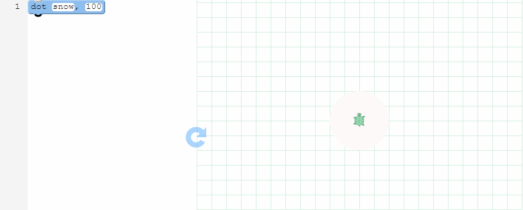
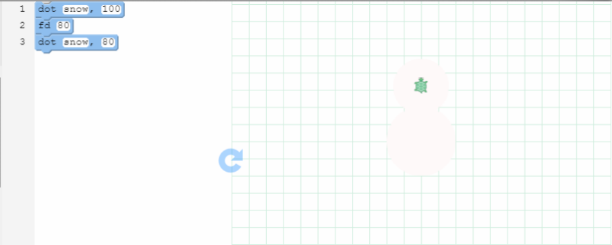
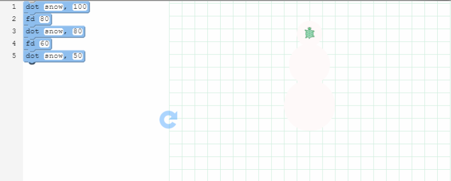
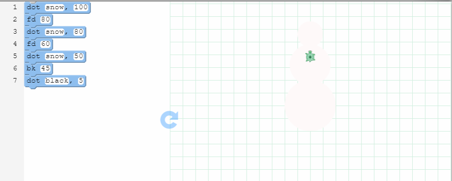
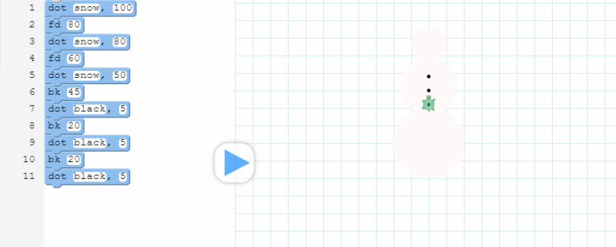

Challenge: Do You Want to Build a Snowman?
Step 1
Step 2
Step 3
Step 4
Step 5
Step 1 Make the snowman base
- Drag the dot block onto your canvas.
- To make your first snowball, type in a color, like snow, and a size, like 100
- Press the button to see the snowball form

Step 2 Make the snowman body
- Now that you have a base, you need to move the cursor up for the second snowball.
- To move the cursor up, drag the fd block onto your canvas.
- Enter a value, like 80 to move up 80 steps.
- Once you've moved up, you can make the second snowball! Remember to do that, you would use the dot block.
- If you want to make a smaller snowball, you may type in a smaller size for this dot, like 80

Step 3 Finally, the snowman's head
- To make the snowman's head, repeat what we did with the second snowball.
- First, you move the cursor up again. Drag the fd block onto your canvas.
- Enter a value, like 60 to move up 60 steps.
- Once you've moved up, you can make the last snowball! Remember to drag over the dot block.
- For the third snowball, you may type in an even smaller size for this dot, like 50

Step 4 Give the snowman some buttons
- Let's dress the snowman with a button.
- First, we need to move the cursor down.
- To move down, drag the bk block onto your canvas.
- To put a button on the second snowball, you can put in a value like 45 to move down 45 steps.
- Once your cursor is where you want it, drag a dot button onto the canvas. You can make the dot black with 5 in size.

Step 5 Finish the buttons, and you're all set
- Add a few more buttons!
- Again, we will need to move the cursor down.
- To move down, drag another bk block onto your canvas.
- If you want more buttons close to each other, you can put in a smaller value like 20 to move down 20 steps.
- Repeat the steps once more to get a dapper snowman with three buttons. Voila, you're done!
